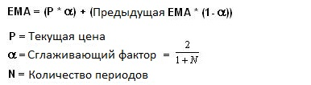
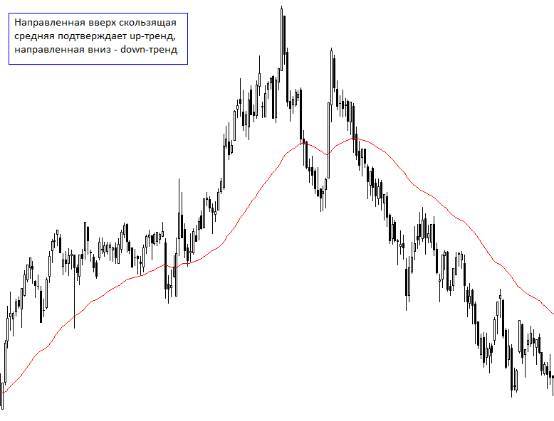
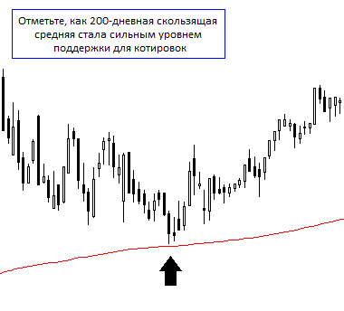
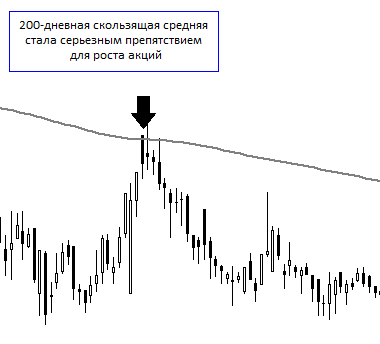
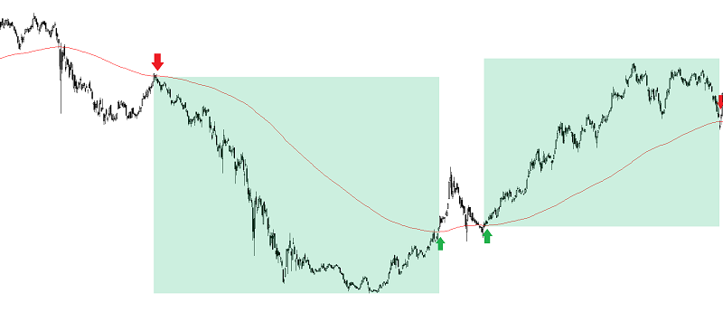
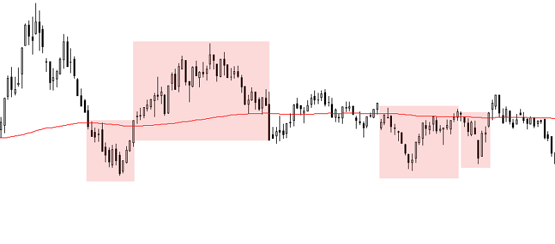
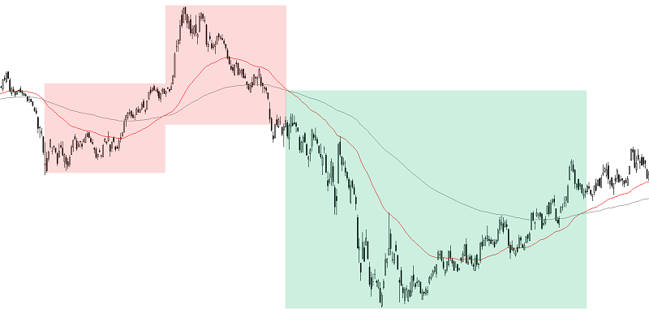
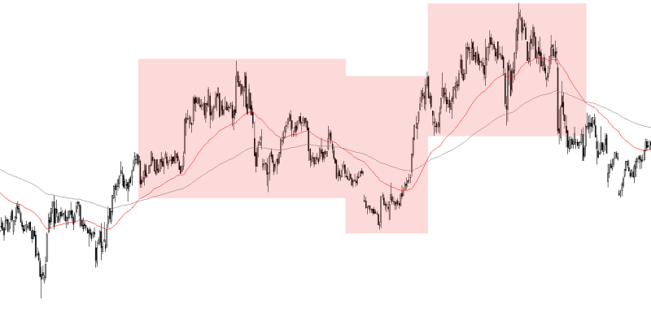

За многолетнюю историю в техническом анализе были созданы сотни индикаторов. Однако одними из наиболее надежных, объективных и полезных инструментов считаются скользящие средние. Это очень популярный и относительно простой индикатор. Предлагаем разобраться с тем, почему важны скользящие средние, как они рассчитываются и как использовать их в своих торговых стратегиях.
Скользящие средние бывают различных видов: простые (Simple Moving Average - SMA), экспоненциальные (Exponential Moving Average - EMA), их производные. Все они являются запаздывающими индикаторами и имеют одно назначение – определение текущего тренда финансовых активов путем сглаживания колебаний и шума. Оценивая направление тенденции, трейдеры могут заставить эти тенденции работать в свою пользу и увеличивать количество прибыльных сделок.
Скользящая средняя является результатом усреднения цены бумаги за выбранный период (N). После расчета итоговое значение отображается на графике в виде кривой линии для того, чтобы трейдеры могли рассматривать сглаженные данные, а не фокусироваться на ежедневных колебаниях цен. Кроме того, можно построить несколько скользящих средних, отрегулировав количество периодов времени, используемых в расчете.
Простейшая форма индикатора, известная как простая скользящая средняя (SMA), вычисляется путем нахождения среднего арифметического заданного набора значений. Например, чтобы рассчитать простую 10-дневную скользящую среднюю, берется сумма цен закрытия за последние 10 дней, а затем делится на 10. Если трейдер хочет построить 50-дневную скользящую среднюю, будет выполнен тот же тип расчета, но он соответственно будет включать цены за последние 50 дней.
Простая скользящая средняя чрезвычайно популярна среди трейдеров, но, как и у всех технических индикаторов, у нее есть свои недостатки. Многие утверждают, что полезность SMA ограничена, потому что каждая точка в серии данных имеет одинаковый вес, независимо от того, где она встречается в последовательности.
Считается, что последние данные более значительны для оценки актива, чем более старые данные и должны иметь большее влияние на конечный результат. Таким образом, чтобы дать больший вес новым данным, была создана экспоненциальная скользящая средняя (EMA).
Изучение формулы ее расчета может оказаться ненужным для многих трейдеров, так как большинство программ автоматически выполняют вычисления. Тем не менее, для понимания все же полезно её знать:
Так как большее внимание при расчете EMA уделяется последним данным, она быстрее реагирует на изменение цен, в отличие SMA. Эта чувствительность является основной причиной, по которой многие трейдеры предпочитают использовать EMA, а не SMA.
Скользящие средние являются полностью настраиваемым индикатором, что означает, что пользователь может свободно выбирать любой временной интервал. Чем короче временной интервал, тем более чувствительна скользящая средняя к изменению цены, и наоборот. При настройке скользящих средних нет «правильного» временного интервала. Лучший способ выяснить, какой из них лучше всего подходит для вас – экспериментировать с несколькими различными периодами времени, пока не найдете тот, который соответствует вашей стратегии.
Некоторые из основных функций скользящей средней – выявление направления тенденции, определение потенциальных областей, где актив найдет поддержку или сопротивление. Кроме того, скользящие средние могут быть полезны при установлении стоп-лосс ордеров.
Определение тенденции является одной из ключевых функций скользящих средних. Скользящие средние – это отстающие показатели, а это означает, что они не предсказывают перелом тренда, а подтверждают существующий. Как вы можете видеть на графике, акции находятся в up-тренде, когда цена расположена выше скользящей средней, а сама скользящая средняя направлена вверх. И наоборот, цена, расположенная под направленной вниз скользящей средней, подтверждает нисходящий тренд.
Другим распространенным использованием скользящих средних является определение потенциальных ценовых поддержек. Падение цены часто затормаживается там, где проходит скользящая средняя. Кроме того, от ключевых скользящих средних, например с периодами 50 или 200 дней, возможен отскок, но для этого требуется подтверждение и других технических индикаторов.
Когда цена актива находится в области ниже скользящей средней, закрепиться выше нее может быть довольно трудно. Таким образом, MA становится сопротивлением и используется трейдерами как знак фиксации прибыли. Также скользящие средние в таком случае могут рассматриваться в качестве точек входа в короткую позицию, так как часто цена отскакивает вниз от этого рубежа и продолжает снижаться.
Характеристики поддержки и сопротивления скользящих средних делают их отличным инструментом для управления рисками. Способность скользящих средних идентифицировать стратегические места для стоп-лосс позволяет трейдерам вовремя закрыть убыточные позиции. Трейдеры, которые открыли длинную позицию устанавливают стоп-лосс ниже скользящих средних.
Основной принцип анализа этого трендового индикатора – рассмотрение положения ценового графика относительно средней линии. В период, когда цена находится выше средней, текущая ситуация лучше ожиданий, а значит – на рынке преобладают бычьи настроения. И наоборот, если цена опускается ниже линии скользящей средней – это сигнал того, что ожидания рынка не оправдались и на рынке господствуют медведи. Таким образом, пересечение MA с ценой может стать сигналом к совершению сделки: пересечение цены снизу вверх дает сигнал на покупку, сверху вниз – на продажу.
Однако тут стоит учесть важный момент. Скользящие средние являются трендовым индикатором, который дает хорошие сигналы на открытие и закрытие позиций только при наличии сильного тренда. Когда рынок находится в длительном боковике, эти сигналы являются ложными и приводят к убыточным сделкам.
Если рынок демонстрирует сильную волатильность, то пересечение двух и более скользящих средних с разными периодами больше подходит для анализа. Принцип получения торгового сигнала от пересечения двух средних аналогичен принципу пересечения скользящей с ценовым графиком, с той лишь разницей, что вместо ценового графика в данном случае выступает вторая скользящая средняя с меньшим параметром N.
Таким образом, сигналом на покупку будет являться пересечение медленной скользящей средней, то есть с большим N, снизу вверх быстрой скользящей, а на продажу – пересечение сверху вниз.
И в этом случае не стоит забывать, что цена должна находиться в тренде.
Стоит также отметить, что при открытии с гэпом вверх или вниз, скользящие могут давать ложные сигналы на покупку или продажу, так как они являются запаздывающими индикаторами.
Также скользящие средние стоит комбинировать с другими индикаторами и осцилляторами, такими как MACD-гистограмма или осциллятор RSI, которые будут подтверждать сигналы скользящих. О них мы расскажем подробно в следующих обзорах. Полезно использовать и объемные подтверждения силы тенденции.
- Скользящие средние являются одним из самых популярных технических индикаторов;
- Они бывают различных видов, но имеют одно назначение – определение текущей тенденции путем сглаживания волатильности и шума;
- Простейшая форма скользящей средней известна как простая скользящая средняя (SMA). Она находится путем вычисления среднего арифметического цен за определенный промежуток времени (N);
- Экспоненциальная скользящая средняя (EMA) присваивает больший вес последним данным, именно поэтому является более предпочтительной;
- Основные функции скользящих средних включают в себя определение тенденции и точек разворотов, а также уровней поддержки и сопротивления;
- Скользящее среднее может быть инструментом управления рисками. Благодаря ей можно устанавливать стоп-лосс и сократить убыточную позицию;
- Самые популярные сигналы скользящих средних – это пересечение их с ценой или пересечение их между собой;
- Пересечение цены скользящей средней вверх дает сигнал на покупку, вниз – на продажу;
- Пересечение медленной MA быстрой снизу вверх дает сигнал на покупку, сверху вниз – на продажу;
- Сигналы скользящих средних могут быть ложными, когда бумаги торгуются в боковике или когда образуется гэп;
- Скользящие средние стоит комбинировать с различными индикаторами и осцилляторами. Так их сигналы будут более точными, что приведет к открытию прибыльных позиций.